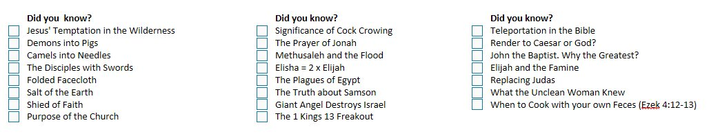

A letter to my BSF Brothers · April 4, 2025 · part of Letters to the Brothers.
Brothers and fellow Bible Buddies — I love God’s Word! I know you all do as well. That is just one of the many reasons that make BSF and our group so special. I recall pretty early on in my Christian life (5–10 years) that I came to realize that I not only loved Jesus, but I was “in love” with Jesus. I had never heard anyone say this and still never have. I was even worried for a long time if that was even a good thing. I don’t think I ever shared it with anyone. Sometime after that I realized that the love of God’s Word that instantly descended on me when I was saved could be the same as my love for Jesus. They are both “The Word.” They both are God’s revelation of Himself to man. I think the analogy holds true that I am “in love” with the Word. I could write a ton on the difference between ‘loving’ the Word and being ‘in love’ with the Word (Jesus/Bible). Suffice it to say one is more of my will and the other is more of my emotions. As I finished typing that last sentence, I asked AI about this, and it agrees that is actually how it should be for all Christians. Here is the response. Do you agree?
This morning, I was just watching Bible videos for fun. I know that sounds odd, but I do it all the time. Every day. I don’t think there is anything wrong with that. It seems to fit being ‘in love’ with it. Of course, there is much more than that but it’s the same with my wife — I am ‘in love’ with her and because of that I have fun with her (or at least I did until Mr. Tumor). As I watched the video, I quickly realized I was having more than just ‘fun.’ I was learning things I had never even considered before. Then I thought I should share this with you guys. It is a long video (47:47) but is well worth it. I don’t know when our next Fellowship Night is but perhaps beforehand we could watch it, and each one could share which of these Bible story insights hit us the hardest — whether positive, negative or just humorous. I made a checklist to help 🙂 — Erv

PS — “The Scriptures are shallow enough for a babe to come and drink without fear of drowning and deep enough for theologians to swim in without ever touching the bottom” — attributed to St. Jerome.
Comments